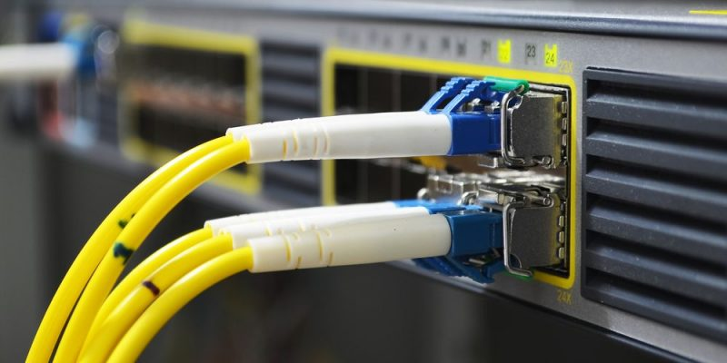

¿Qué es la fibra óptica?
Es un medio de transmisión que utiliza hilos de vidrio o plástico para transmitir datos como pulsos de luz. Ofrece velocidades muy altas y es ideal para largas distancias.
Tiene baja pérdida de señal, es inmune a interferencias electromagnéticas y se usa en internet, televisión y redes modernas.
